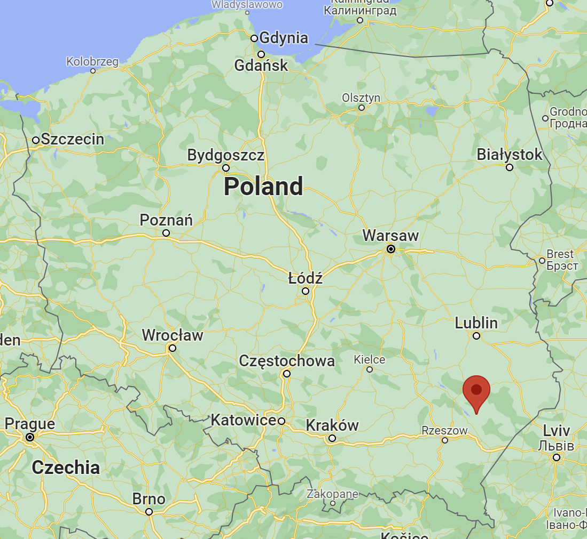

While I was staying at my grandma's house, we spent a few days going over to see her mother. My grandma's mom, or my great-grandmother, was at the time 93 years old! I spent a lot of time talking to her and surpisngly she remembered who I was, even though the last time I had seen her was when I was just 3 years old. Talk about a good memory! Because of her old age, she was living with her children on the family home. Because they lived in such a rural place, they had built up a large farm. The rest of the time that I was there I spent lurking around the farm, looking at the cows, and wandering the many fields of tobacco.
